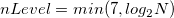
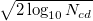
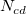

ノイズのある信号は、複数レベルの1Dウェーブレット分解を使って、最初に、数セットの近似係数と詳細係数に分解されます。そして、絶対値がしきい値より小さいような詳細係数がすべて破棄されます。最後に、近似係数と変更された詳細係数がノイズ除去された信号を再構成するのに使用されます。
複数レベルの1Dウェーブレット分解は、近似係数を連続的に分解する処理です。nLevel を時間数とし、分解を実行します。そして、nLevelを  のように計算できます。
ここで N は入力信号の長さです。
しきい値は、最後の l レベルの詳細係数にのみ実行され、 l は変数Thresholding Levelで指定されます。これらの係数の値が調べられます。絶対値がしきい値より小さいような詳細係数は0に置き換えられます。
しきい値の種類がsqtwologの場合、しきい値のレベルが次の式で計算されます。
ここで  は、最後の l レベルの詳細係数の数です。